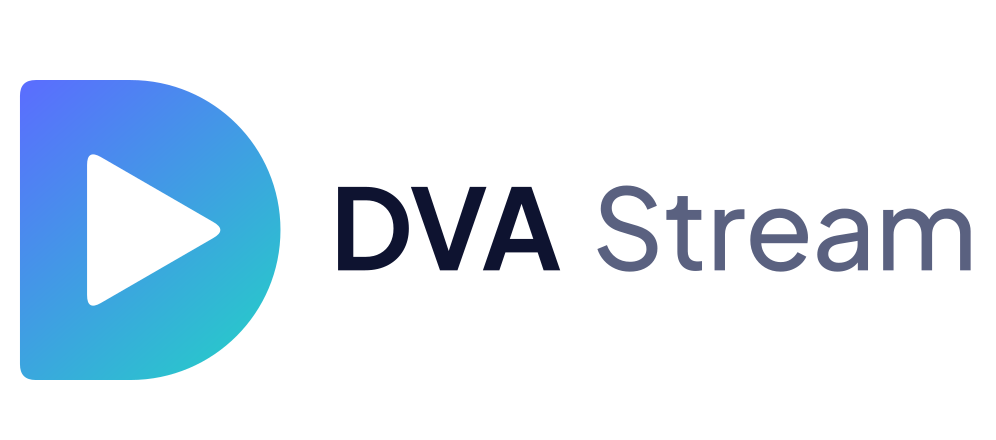
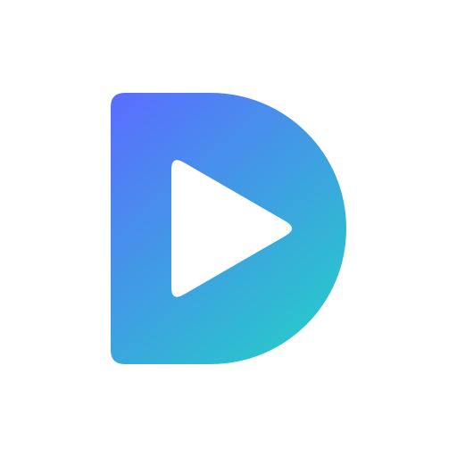
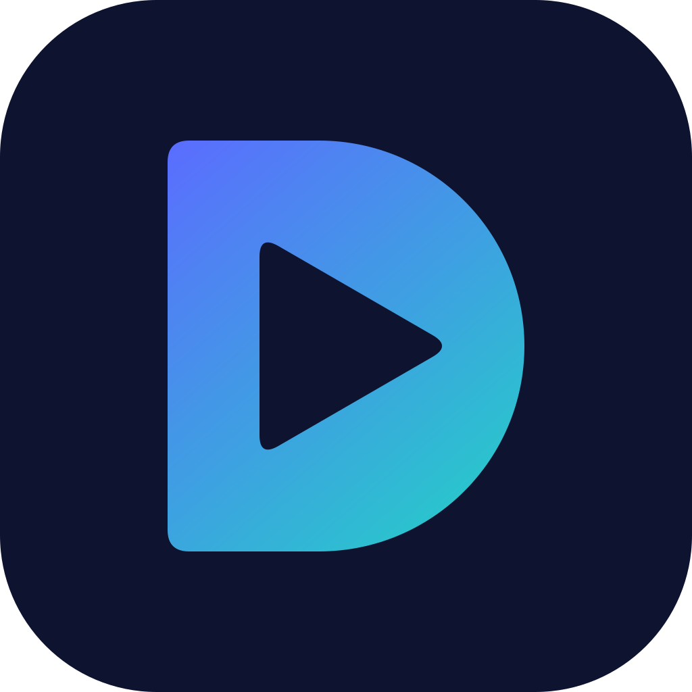
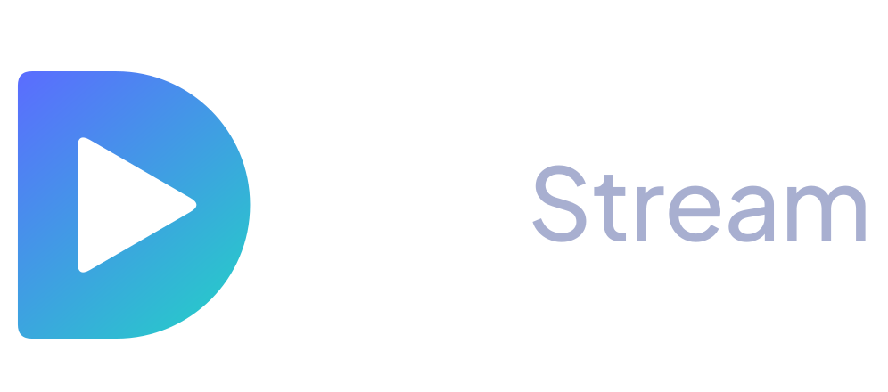
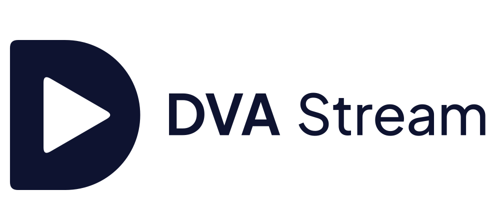
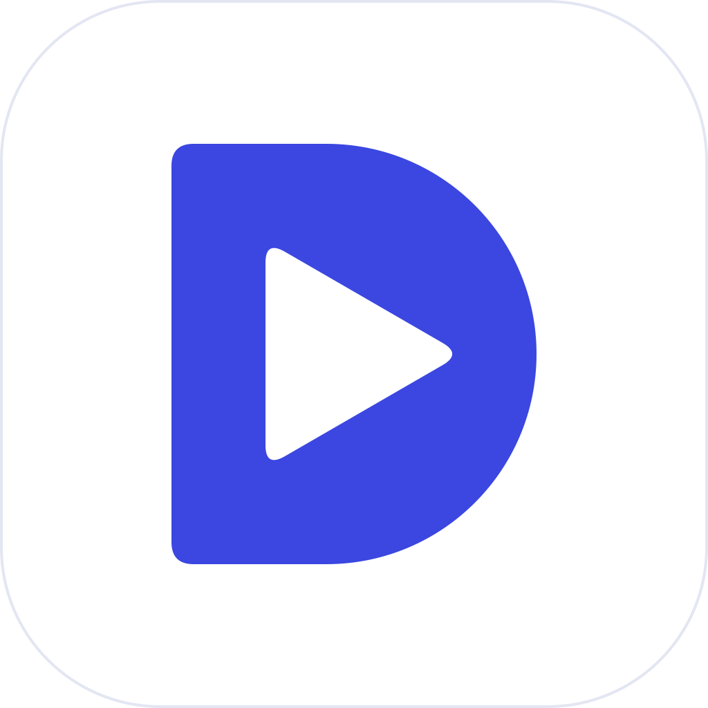

DVA Labs · Phase Design · v1 · direction artistique


Un D qui contient un « play ». Le monogramme est l'initiale de DVA ; le triangle placé dans son vide dit « vidéo » et « streaming » au premier coup d'œil.
Une seule forme, aucun détail décoratif : lisible de 16 px à une affiche, et reconnaissable sans le nom.

Indigo et aqua, jamais de rouge : l'identité se démarque de YouTube et des sites de téléchargement douteux. Registre : sobre, fiable, corporate.




Le dégradé est réservé au logo et à l'icône. Sur fond clair sans dégradé, utiliser l'Indigo #3B47E0 (contraste 6:1 sur blanc, conforme WCAG AA).
Laisser autour du logo un vide égal à la largeur de la barre gauche du D.
Monogramme : 16 px. Logo horizontal : 96 px de large. En dessous, monogramme seul.
Étirer, pivoter, recolorer hors palette, ajouter une ombre ou un contour.